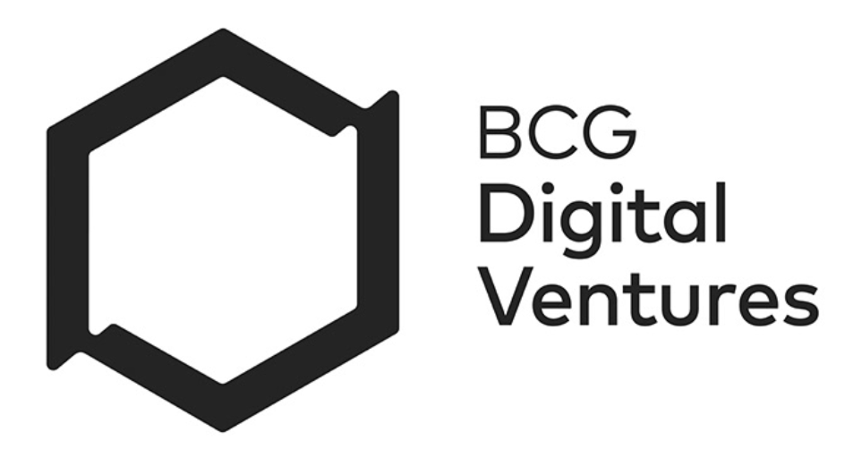
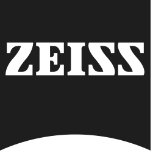
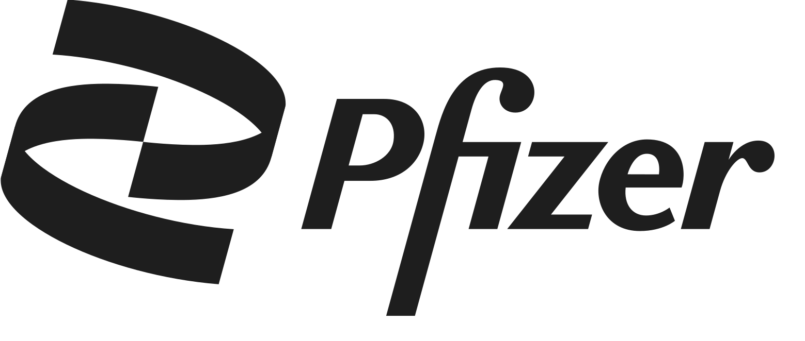

Natacha Ruivo
Work Experience
Senior UXD at Critical Techworks | a BMW Group Company
Critical TechWorks is a joint venture to lead the future of motion. We're developing the next generation of software systems for the BMW's future driving machines.
- Designed BMW in-car Media and Entertainment experiences across multi-display ecosystems for front and rear seats, creating seamless cross-screen interactions for drivers and passengers.
- Built a BMW dealership configurator tool and B2B stock management dashboard, introducing user-centered design practices and a B2C design system. I also contributed to a shop-floor assembly tool.
- Part of a team of 5 UX designers leading the integration and adoption of AI-assisted and AI-native workflows for 100+ designers, leveraging BMW-approved AI tools to improve efficiency, design quality, and speed across research, ideation, prototyping, and implementation.
Senior Experience Design at BCG Digital Ventures (BCGX)


BCG Digital Ventures, part of BCG X, builds and scales innovative businesses with the world's most influential companies.
- Designed a digital vision care venture for Zeiss in China with AR virtual try-on and Machine Learning-driven personalization, from product discovery and validation through build and launch.
- Part of a venture validation process for BASF and Redesigned a scalable people development model, aligning employee growth and BCG Digital Ventures' mission.
Senior Product Designer at Babbel
- Led product design across multiple initiatives, delivering end-to-end experiences in close collaboration with cross-functional teams. Drove consistency across products, improved design processes and practices, and supported team growth through weekly 1:1 mentoring.
Senior UXD & Business Development at Minitheory
- As the UX Lead Designer, I focused on mobile apps, responsive web, and software projects for enterprises, organizations, and startups within various sectors.
- Led a project with SUEZ and Singapore's National Water Agency (PUB) to develop a system that improved water supply monitoring and flood prevention. The solution enabled event prediction, supported decision-making, and reduced response times for water quality issues.
UX/UI Product Designer at Shortcut AS

Designed iOS and Android applications for healthcare (Pfizer), finance (Nordea Bank), and a B2B iPad tool (Adecco) from research to pixel-perfect execution, working in close collaboration with developers.
UX Designer at Mobients Inc
Worked across various teams and departments, responsible for designing UX flows and wireframes as part of a one year project for the telecom AT&T, U-verse App for iOS and Android. AOT 4.9 million downloads.